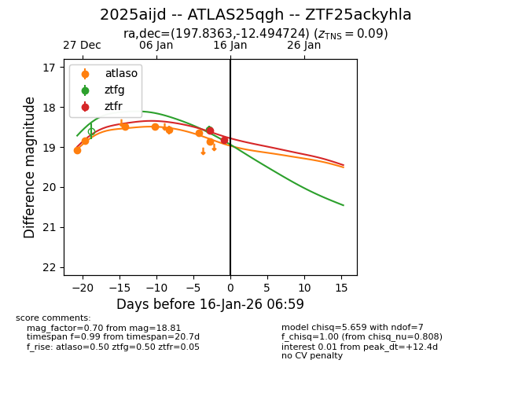
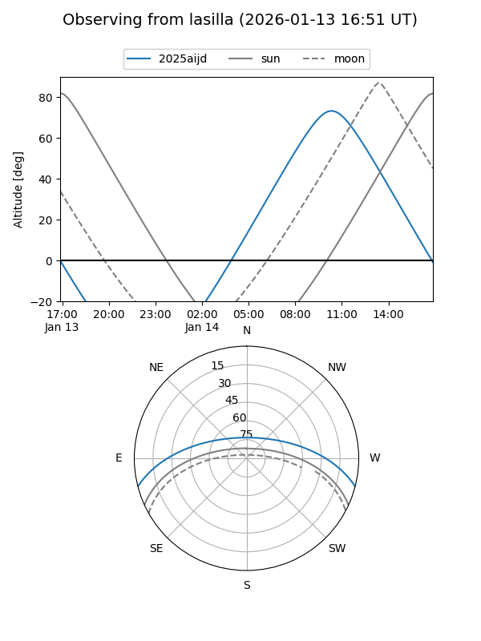
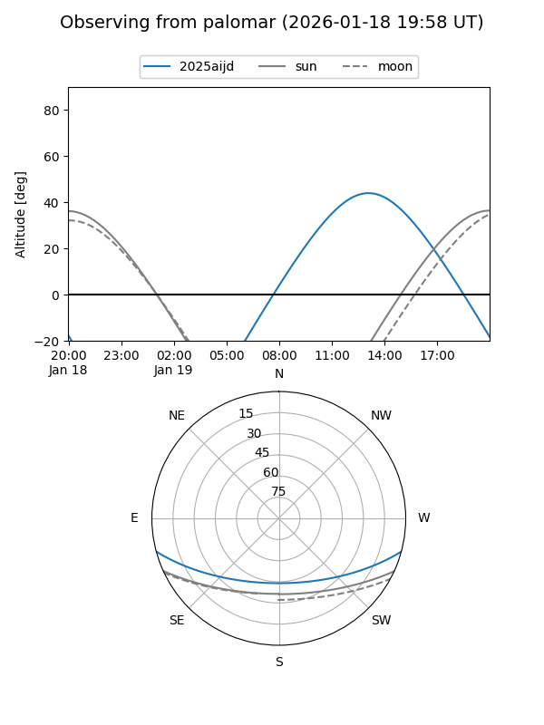
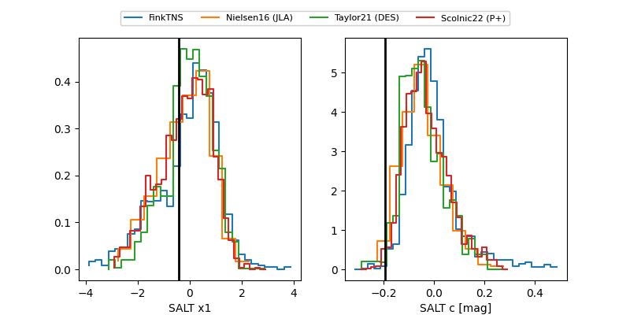

2025aijd
Target 2025aijd at 2026-01-15 16:55
Aliases and brokers:
FINK: link
Lasair: link
ALeRCE: link
TNS: link
YSE: link
alt names
ZTF25ackyhla (ztf,fink_ztf)
2025aijd (tns,yse)
ATLAS25qgh (atlas)
Coordinates:
equatorial (ra, dec) = 197.8363,-12.49472
equatorial (HMS+DMS) = 13:11:20.72,-12:29:41.01
galactic (l, b) = (310.5169,+50.08361)
Flags:
confirmed ia
Photometry:
last atlaso=18.86, ztfg=18.56, ztfr=18.81
7 atlaso, 1 ztfg, 2 ztfr detections
Lightcurve

Visibility


Additional plots
